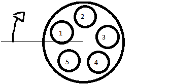
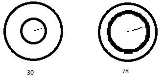
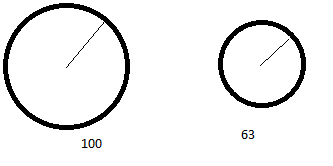
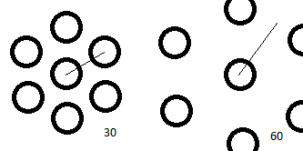
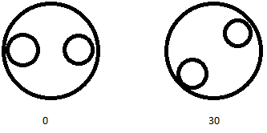
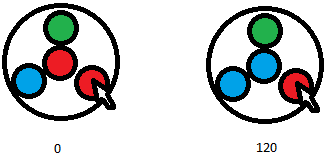

HTML:
<div id="my-wheel-container" class="my-wheel"></div>
Code:
<script>
More code:
<script>
General:
div.wheel-container[data-selected=N][data-icon=ICON]
Yes / No Generated HTML example:
<div class="wheel-container"
Options are displayed in this form (if offsetAngle is default):
Each icon has it's index and icon as class:
When the user moves the mouse around the opened wheel (.in class means it's opened), it shall toggle attributes on .wheel-container as such:
Use this css template to code upon
.wheel-container {
}
.wheel-container .wheel-inner {
}
.wheel-container .wheel-center {
}
.wheel-container .wheel-center .fa {
}
.wheel-container .wheel-inner .wheel-option-container {
}
.wheel-container .wheel-inner .wheel-option-container .wheel-option {
}
.wheel-container .wheel-inner .wheel-option-container .wheel-option .fa {
}
.wheel-container.in {
}
.wheel-container.in .wheel-inner {
}
.wheel-container.in .wheel-center {
}
.wheel-container.in .wheel-center .fa {
}
.wheel-container.in .wheel-inner .wheel-option-container {
}
.wheel-container.in .wheel-option {
}
.wheel-container.in .wheel-inner .wheel-option-container .wheel-option .fa {
}
Template to create color schemes, using 1, 2, 3 (N) or using icon (font awesome's icon class without the ".fa-" prefix)
.wheel-container .wheel-option.option-index-N { background:#COLOR_MUTED; }
div.wheel-container[data-selected="N"] .wheel-option.option-index-N { background:#COLOR_HOVER; }
div.wheel-container[data-selected="N"] .wheel-center { background:#COLOR_HOVER; }
.wheel-container .wheel-option.icon-FONTAWESOMEICON { background:#COLOR_MUTED; }
div.wheel-container[data-icon="FONTAWESOMEICON"] .wheel-option.icon-FONTAWESOMEICON { background:#COLOR_HOVER; }
div.wheel-container[data-icon="FONTAWESOMEICON"] .wheel-center { background:#COLOR_HOVER; }
Social Media Wheelzator (doesn't includes -square here, like )
.wheelzator-social .wheel-container .wheel-option.icon-facebook { background:#9daccc; }
.wheelzator-social .wheel-container .wheel-option.icon-twitter { background:#aad6f7; }
.wheelzator-social .wheel-container .wheel-option.icon-google-plus { background:#eea59c; }
.wheelzator-social .wheel-container .wheel-option.icon-youtube { background:#dd7f7f; }
.wheelzator-social .wheel-container .wheel-option.icon-linkedin { background:#7fbddb; }
.wheelzator-social .wheel-container .wheel-option.icon-instagram { background:#85aac5; }
.wheelzator-social .wheel-container .wheel-option.icon-pinterest { background:#e58f93; }
.wheelzator-social .wheel-container .wheel-option.icon-whatsapp { background:#a3e29e; }
.wheelzator-social .wheel-container .wheel-option.icon-vine { background:#7fdfc7; }
.wheelzator-social .wheel-container .wheel-option.icon-snapchat { background:#fffe7f; }
.wheelzator-social .wheel-container .wheel-option.icon-spotify { background:#7ff2b0; }
.wheelzator-social .wheel-container .wheel-option.icon-tumblr { background:#98a7b6; }
.wheelzator-social .wheel-container .wheel-option.icon-rss { background:#ffb27f; }
.wheelzator-social div.wheel-container[data-icon="facebook"] .wheel-option.icon-facebook { background:#3b5998; }
.wheelzator-social div.wheel-container[data-icon="twitter"] .wheel-option.icon-twitter { background:#55acee; }
.wheelzator-social div.wheel-container[data-icon="google-plus"] .wheel-option.icon-google-plus { background:#dd4b39; }
.wheelzator-social div.wheel-container[data-icon="youtube"] .wheel-option.icon-youtube { background:#bb0000; }
.wheelzator-social div.wheel-container[data-icon="linkedin"] .wheel-option.icon-linkedin { background:#007bb5; }
.wheelzator-social div.wheel-container[data-icon="instagram"] .wheel-option.icon-instagram { background:#125688; }
.wheelzator-social div.wheel-container[data-icon="pinterest"] .wheel-option.icon-pinterest { background:#cb2027; }
.wheelzator-social div.wheel-container[data-icon="whatsapp"] .wheel-option.icon-whatsapp { background:#4dc247; }
.wheelzator-social div.wheel-container[data-icon="vine"] .wheel-option.icon-vine { background:#00bf8f; }
.wheelzator-social div.wheel-container[data-icon="snapchat"] .wheel-option.icon-snapchat { background:#fffc00; }
.wheelzator-social div.wheel-container[data-icon="spotify"] .wheel-option.icon-spotify { background:#00e461; }
.wheelzator-social div.wheel-container[data-icon="tumblr"] .wheel-option.icon-tumblr { background:#32506d; }
.wheelzator-social div.wheel-container[data-icon="rss"] .wheel-option.icon-rss { background:#ff6600; }
.wheelzator-social div.wheel-container[data-icon="facebook"] .wheel-center { background:#3b5998; }
.wheelzator-social div.wheel-container[data-icon="twitter"] .wheel-center { background:#55acee; }
.wheelzator-social div.wheel-container[data-icon="google-plus"] .wheel-center { background:#dd4b39; }
.wheelzator-social div.wheel-container[data-icon="youtube"] .wheel-center { background:#bb0000; }
.wheelzator-social div.wheel-container[data-icon="linkedin"] .wheel-center { background:#007bb5; }
.wheelzator-social div.wheel-container[data-icon="instagram"] .wheel-center { background:#125688; }
.wheelzator-social div.wheel-container[data-icon="pinterest"] .wheel-center { background:#cb2027; }
.wheelzator-social div.wheel-container[data-icon="whatsapp"] .wheel-center { background:#4dc247; }
.wheelzator-social div.wheel-container[data-icon="vine"] .wheel-center { background:#00bf8f; }
.wheelzator-social div.wheel-container[data-icon="snapchat"] .wheel-center { background:#fffc00; }
.wheelzator-social div.wheel-container[data-icon="spotify"] .wheel-center { background:#00e461; }
.wheelzator-social div.wheel-container[data-icon="tumblr"] .wheel-center { background:#32506d; }
.wheelzator-social div.wheel-container[data-icon="rss"] .wheel-center { background:#ff6600; }
wheelzator("#element", optionsArray, configurationObject);
var options = [
icon: The FontAwesome icon class, without the "fa-" prefix.
Example: "group"
value: Whatever value this wheel's option should have.
Example: 5, (an category ID to relate to an post); TRUE or FALSE, meaning "Active" or "Inactive", etc
title: Actual title="" attribute.
Example: "Activate", "Share on facebook", "Admin Group": The explanation of what this option is.
-- Use bootstrap's .tooltip() to improve style and user experience:
$(".wheel-option-container a").tooltip();
Defines size, angle and callback functions
var config = {
minDistance:
Minimal distance from center of wheel to select an option.
Clicking within this radius will trigger onDeselect().

maxDistance:
Outer limit of wheel. Also represents .wheel-inner size.
Clicking outside this radius will trigger onDeselect().

optionDistance:
Distance of each option to the center of wheel.

offsetAngle:
Amount of degrees to rotate the options

offsetCalcAngle:
In-code compensation angle

onOpen():
Function called when wheel is opened.
Takes no arguments.
onSelect(data):
Function called when an option is selected.
data object:
index,
value,
target,
wheelContainer,
originObject
index: number of option selected
value: assigned value of this option
target: html obj of option selected
wheelContainer: html object of wheel container
originObject: html object parent of wheel container
onDeselect():
Function called when selection happens inside the donut hole or outside of wheel.
Takes no arguments.
<div class='wheelzator-flat-ui'>
<div class='wheelzator-yes-no'>
<div class='wheelzator-importance'>
<div class='wheelzator-blueish'>
<div class='wheelzator-social'>
var wheelzatorYesNo = [
var wheelzatorImportance = [
Default is Rotation with Scaling, with easeOutBack transition.
Important: when not selected, .wheel-inner must have transform:scale(0);, otherwise the options will overlap all elements around the wheel.
.wheel-container .wheel-inner {
.wheel-container .wheel-inner {
.wheel-container .wheel-option {
Example: set the value of a wheel via js
wheelzator() returns an wheelzator object:
var activeInactiveWheel = wheelzator("#a-i-wheel", [
Obs.: calling .setIndex(), .setValue() and .deselect() does not trigger .onSelect(), .onClose() etc. functions.
Sets the selected option of the wheel according to index. Starts in 1
returns an error if index is <1 or greater than wheel's number of options.
Sets the selected option of the wheel according to value.
directly compares this argument to each option's value and calls setIndex(). Returns error if didn't find.
Deselects the wheel, setting it to none.
Returns current wheel index, or undefined if deselected.
The same as $("#wheelzator-container .wheel-container").attr("data-value")
Returns current wheel value, or undefined if deselected.
The same as $("#wheelzator-container .wheel-container").attr("data-selected")
jQuery 1.1
Font Awesome
Bootstrap if you'll use tooltip